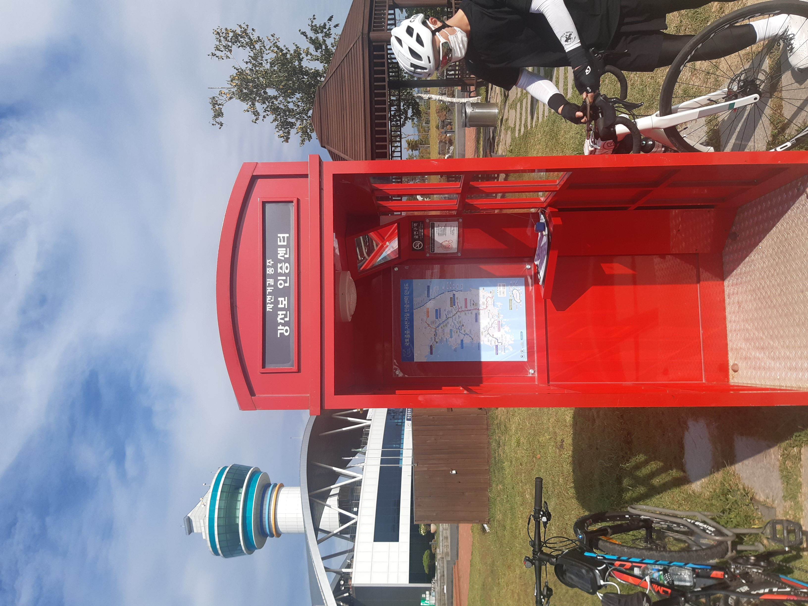
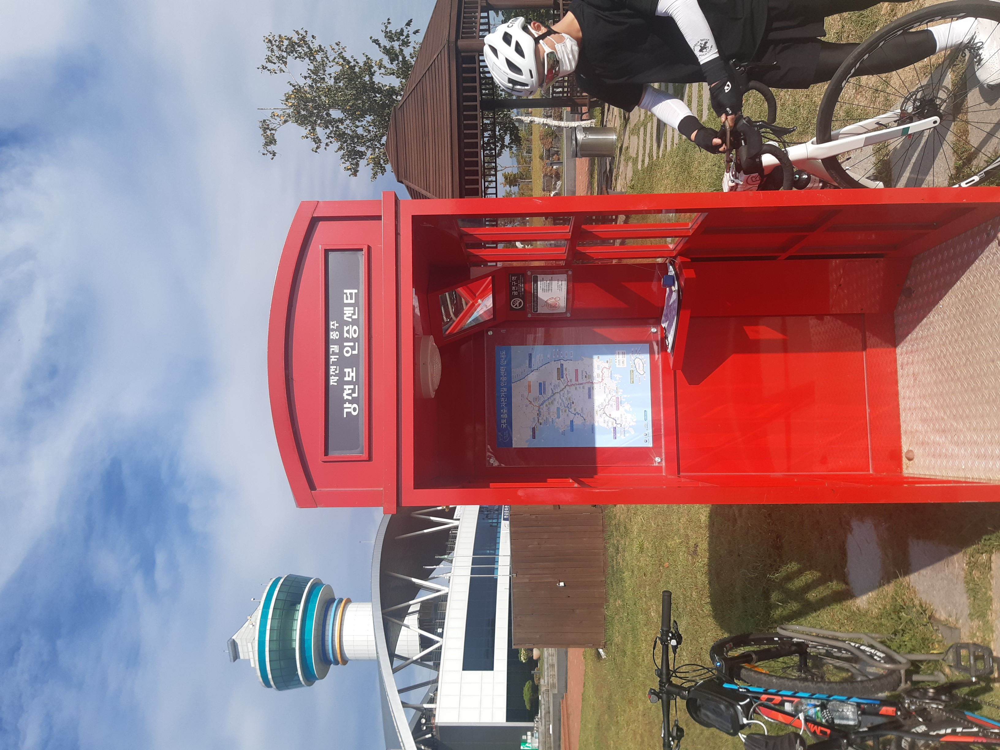
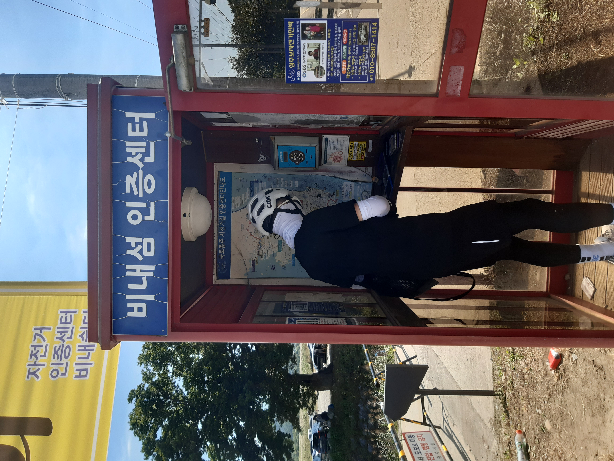
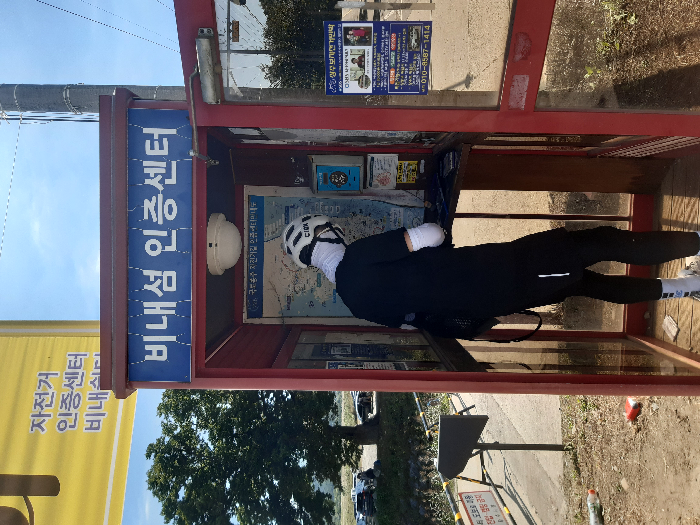
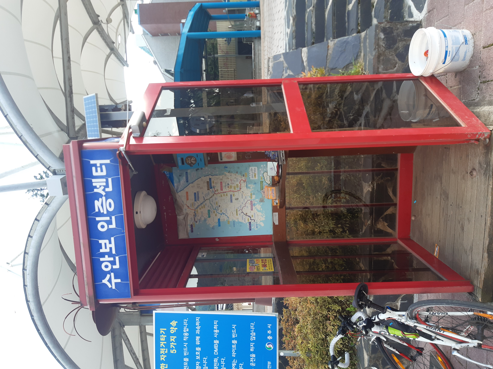

2일차 이야기 : 여주보 ~ 문경읍 숙소 [121km]
1일차를 무사히 마치고 2일차 아침이 밝아왔다.
우리는 아침7시부터 숙소를 나와서 여주시내의 김밥천국에서 간단하게 끼니를 해결한 뒤 곧바로 충주를 향해 출발하였다.

 
여주시내의 한 김밥천국 + 강천보인증센터 모습

여주시내의 한 김밥천국 + 강천보인증센터 모습
2일차는 소조령과 이화령을 넘어야하는 날이여서 다른 날보다 더 서둘러서 폐달을 밟았다.
그렇게 강천보와 창남이고개, 그리고 국종루트는 아니지만 충주 '잣고개'를 넘어서 충주시에 도착할 수 있었다.
 
잠깐 들어가는 강원도 안내 표지판! + 비내섬인증부스
비내섬인증센터 가기 전에 마시는 드립커피

잠깐 들어가는 강원도 안내 표지판! + 비내섬인증부스
비내섬인증센터 가기 전에 마시는 드립커피

 충주가기 직전에 있는 고개인 잣고개 ( 은근히 경사가 가파릅니다ㅠ 본래 길로 가는걸 추천합니다 ) + 충주탄금대인증센터
충주가기 직전에 있는 고개인 잣고개 ( 은근히 경사가 가파릅니다ㅠ 본래 길로 가는걸 추천합니다 ) + 충주탄금대인증센터
충주를 도착해서 보니 점심시간이였고, 원래는 충주탄금대인증센터 근방에 있는 '까망콩두부'라는 음식점에서 점심을 먹을 예정이였으나 추석연휴라 문을 닫은 것이였다.
그래서 새재 길로 접어들어서 아무 음식점이나 들어가려고 했으나 예상과는 다르게 아무 음식점도 나오지 않았으며 꽤 많은 시간을 달려서 나온 편의점에서 겨우 점심을 먹을 수 있었다.
(새재 자전거길에는 이렇다 할 음식점이 없으므로 충주에서 무조건 보급하는 것을 추천합니다~)
새재 자전거길은 보급할 장소는 없었으나 경치는 정말 멋있었다!!
산을 따라서 만든 자전거길이라 그런지 중간중간에 나오는 풍경들이 그림과 같았다..!
이런 좋은 길을 달리다보니 순식간에 수안보인증센터에 도착할 수가 있었으머 앞으로 만날 령 두개를 넘기 위해 수안보 농협에서 간단하게 보급을 충분히 하였다.
 수안보인증센터
보급을 마친 우리는 첫 관문인 소조령을 향해 달렸다.
소조령을 가는 길은 계속해서 잔잔한 업힐이 이어졌으며 소조령 시점부터 확연하게 가팔라지기 시작했다.
하지만 소조령 업힐은 생각보다 '무끌바(업힐서 자전거를 끌지 않음)'로 올라갈만했고 무끌바정복에 성공했다.
 소조령 정상 (볼게 없다)
소조령 정상 (볼게 없다)
소조령 다운힐을 마친지 얼마 되지 않아서 진짜가 나타났는데 그 유명한 이화령 업힐이 눈 앞에 펼쳐진 것이다.
이화령은 업힐만 5km로 도저히 무끌바로 정복할 자신이 없었다. 그래서 자전거를 끌고서 등산모드로 이화령 정상을 올라갔다..ㅠ
(다음 국토종주도전 때는 꼭 무끌바로 이화령 정상에 올라야지..)
이화령에서의 아름다운 뷰를 뒤로 한체로 2일차 마지막 목적지인 문경읍으로 이동했는데 다운힐만 5km정도되니까 재밌기도 했지만 한편으론 내려가는 것도 힘들었던 것 같다.
2일차 일정을 마치고 숙소에 들어갔을 때는 이제 정말 힘든 구간은 끝났다는 생각에 끝났다는 생각에 기뻐하며 고기를 먹고 잠을 청했다.
(정말로 힘든 구간은 대구 아랫구간이였는데 말이죠..ㅋㅋ)